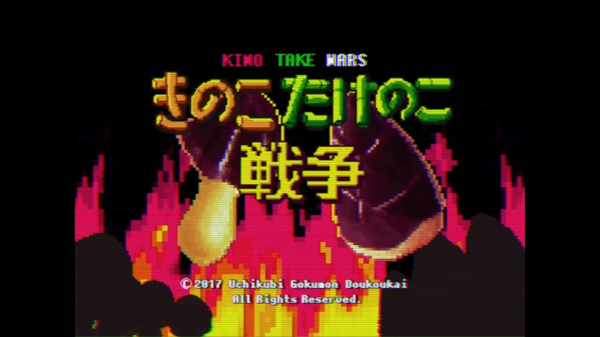
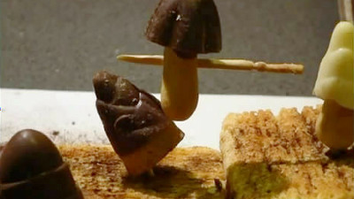
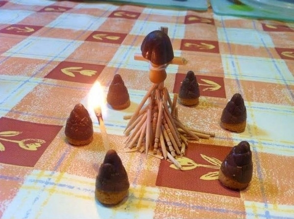

きのこの山の姉妹商品として生み出された「たけのこの里」きのこの山と同じく2層に分かれたチョコレートと塩味のきいたクッキー……チョコレートとクッキーがより一体化し、ともに味わえるたけのこの里はきのこの山とはまた違った人気を博していた。やがてその2つのお菓子を巡り水面下である考えを抱いた。
「果たしてきのことたけのこ、より優れたるはどちらなのか」
ときは流れ2001年、株式会社明治は衝撃の発表を行う。きのこの山とたけのこの里、2つの売り上げを競うキャンペーンを実施すると！
中立と思われた企業からのまさかの開戦宣言。人々は葛藤しながらも真に己が推すべき一を玉座へと押し上げるべく聖戦へと赴く。かくして、今の時代まで続く20年にも及ぶ戦乱、「きのこたけのこ戦争」は開幕したのである。
今や戦果はとどまることを知らず、数々の著名人が自らの陣営を公表。もはや勝負は売り上げのみに留まらず、各々の陣営の保有する人物の影響力までもが重要になっている。人々は日々自らの推しの魅力を語りSNSで火花を散らしている。 どっちも派とかいう蝙蝠野郎を許すな現在まで行われた企画ではややたけのこ有利という状況。我等きのこ信徒はかの憎きたけのこの呪縛を打ち払い、人々を啓蒙していく義務がある。必ずやきのここそが原点にして至上たる神の食物であることを示していかねばならない。

勇猛にたけのこ軍へと攻め込むきのこの戦士の図。もちろん敬虔なきのこ信徒ならば結果はおわかりだろう。

捕虜に対する非人道的な扱い。やはり蛮族と対話することは不可能のようだ。